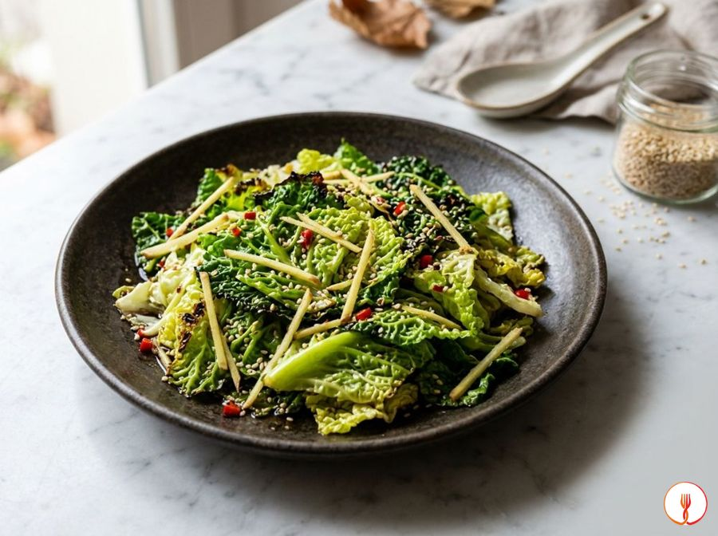

Verza croccante allo zenzero e sesamo tostato
Un contorno di ispirazione asiatica dove la verza viene saltata velocemente ad alte temperature per preservarne la consistenza e il sapore vivace.
Ingredienti
- Verza500 gr
- Zenzero fresco (radice)20 gr
- Salsa di soia2 cucchiai
- Semi di sesamo bianco1 cucchiaio
- Olio di semi di arachidi3 cucchiai
- Peperoncino fresco1/2
- Olio di sesamo (opzionale)1 cucchiaino
Allergeni
Arachidi, Sesamo, Soia
Procedimento
- Tagliare la verza a strisce larghe circa 1,5 cm dopo aver rimosso le parti bianche troppo dure.
- Pelare lo zenzero e tagliarlo a fiammiferi sottilissimi o grattugiarlo finemente.
- Togliere i semi al peperoncino e sminuzzarlo.
- Scaldare l'olio di semi in un wok o in una padella antiaderente molto ampia finché non inizia quasi a fumare.
- Aggiungere lo zenzero e il peperoncino, saltando per soli 30 secondi per sprigionare gli aromi senza bruciarli.
- Tuffare la verza nella padella e saltarla a fiamma vivace per 5 minuti, muovendola continuamente con una pinza o saltando la padella.
- Quando la verza inizia ad appassire ma rimane ancora tenace, sfumare con la salsa di soia e l'olio di sesamo.
- Cucinare per un altro minuto, spegnere il fuoco e servire immediatamente cospargendo con i semi di sesamo precedentemente tostati in un padellino a secco.
Valori nutrizionali (stima)
| Per porzione (112 g) | Per 100 g | |
|---|---|---|
| Energia | 561 kJ / 134 kcal | 498 kJ / 119 kcal |
| Proteine | 3.7 g | 3.3 g |
| Carboidrati | 9.4 g | 8.4 g |
| di cui zuccheri | 3.8 g | 3.4 g |
| Grassi | 10 g | 8.9 g |
| di cui saturi | 1.6 g | 1.4 g |
| Fibre | 4.1 g | 3.7 g |
| Sale | 1.1 g | 1.0 g |
Valori stimati con l'AI su dati medi CREA / USDA: sono indicativi e non sostituiscono il parere di un medico o di un nutrizionista.
Apri la ricetta nell'app per la lista della spesa, le schede ingredienti e i negozi vicini.